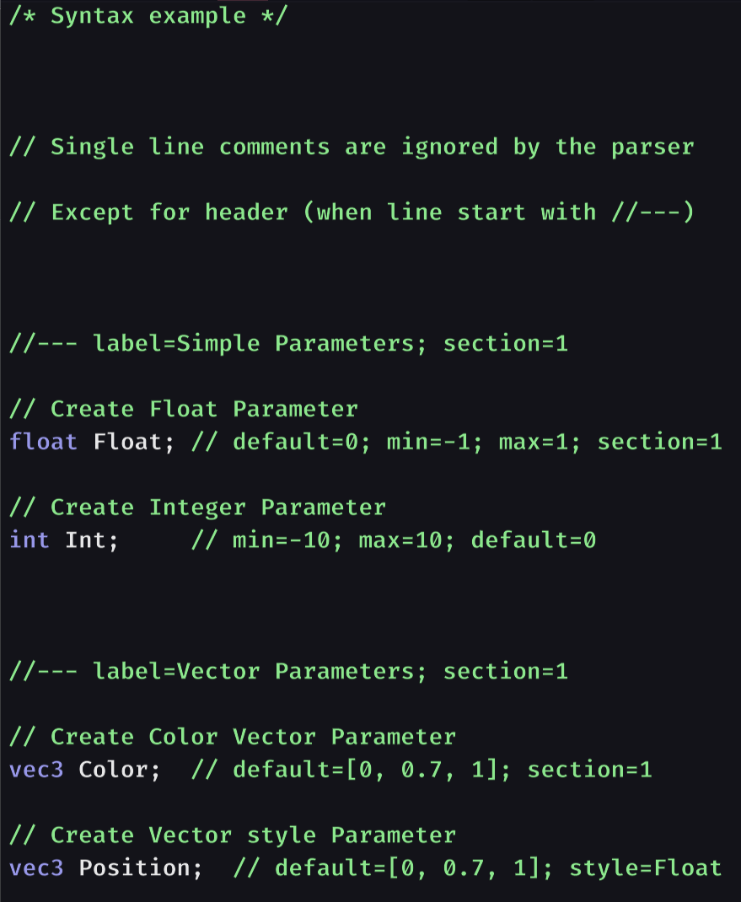
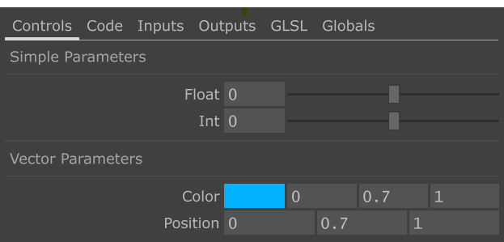
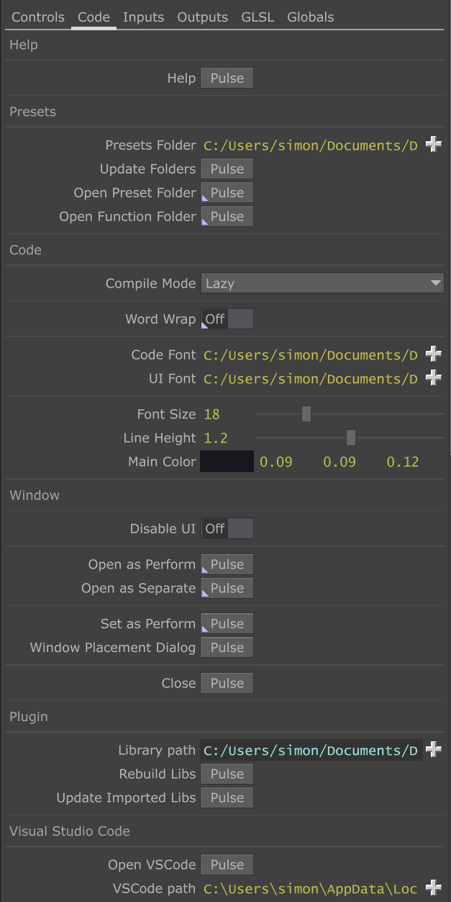
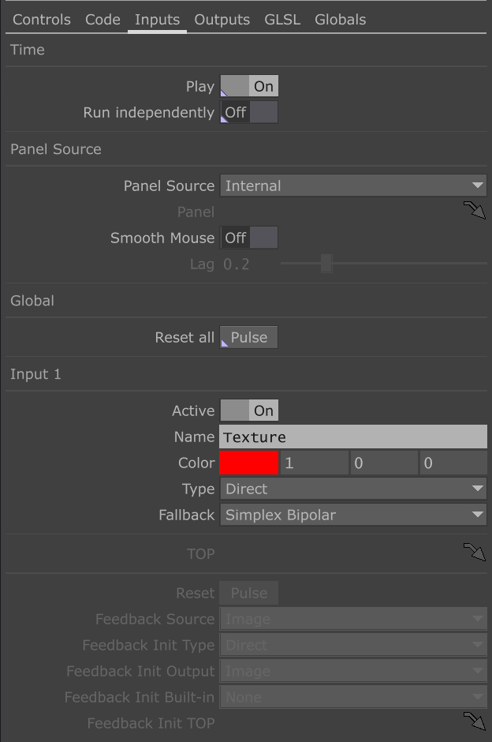
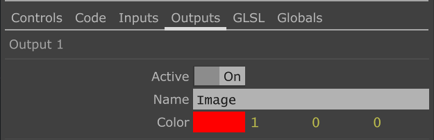
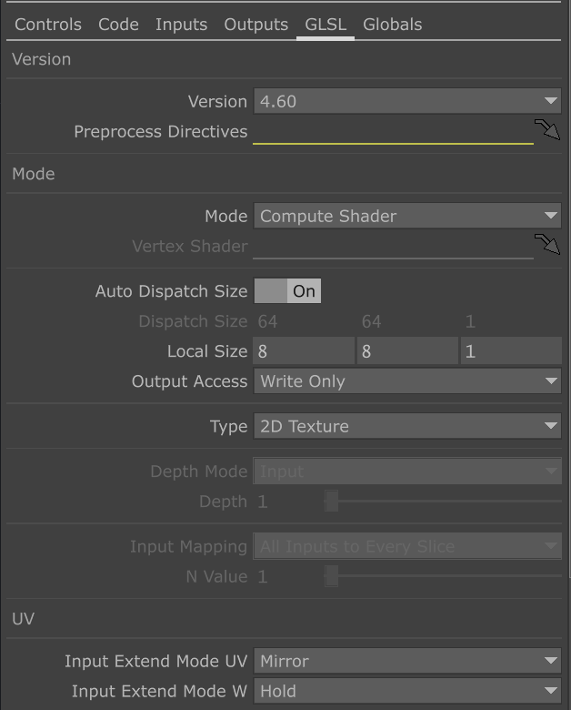
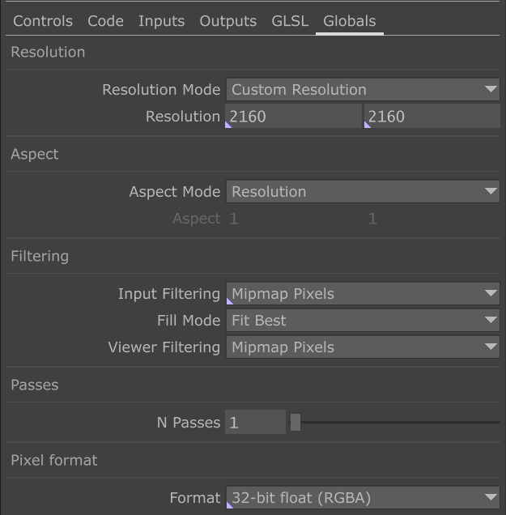

Paramètres
Pixel-Wrangle met à votre disposition de nombreux paramètres répartis en plusieurs page.
Chacune des pages gère des aspects différents de Pixel Wrangle. Les modifications apportées sont sauvegardées avec vos presets. Il est possible d'apporter des modifications via le Component Editor mais je le déconseille fortement, dans un soucis de compatibilité avec des versions futures de Pixel Wrangle
Voici un aperçu général :
-
La page 'Controls' : Ce sont tout les paramètres liés aux variables que vous avez déclaré dans le panneau 'Inputs'. Ces paramètres sont ajoutés dynamiquement en fonction de votre shader. Vous pouvez également faire des modifications depuis le 'Component Editor' de l'instance de Pixel Wrangle si vous le souhaitez, bien que le mieux reste de le faire explicitement dans le Panneau 'Inputs' via les propriétés.
-
La page 'Code' : C'est ici que vous pouvez régler les principales fonctionnalités spécifiques à Pixel Wrangle comme les chemins vers la librairie principale, vers Visual Studio Code, les paramètres liés à l'apparence de l'UI, etc.
-
La page 'Inputs' : Vous définissez ici les entrées du shader comme leur nom, les différents modes (Direct, Feedback, Custom), et d'autres options liés aux entrées de votre shader
-
La page 'Outputs' : C'est ici que vous définissez les sorties du shader, leur nom, etc.
-
La page 'GLSL' : Paramètres liés au GLSL TOP sous-jacent. Comme le mode, la version de GLSL, etc.
-
La page 'Globals' : Paramètres globaux du shader, comme la résolution de sortie, le bit depth, etc.
Page Controls

Comme évoqué précédemment, la page 'Controls' représente toutes les déclarations de variable effectuées dans le Panneau 'Inputs'. Vous pouvez modifier la forme de ce panneau de contrôle et de chacun des paramètres via des propriétés ajoutées en tant que commentaire dans vos déclarations (comme min, max, default, etc.) Cette page est donc générée dynamiquement en fonction du code écrit dans le panneau 'Inputs' Si vous souhaitez utiliser le Component Editor pour faire des modifications sur un paramètre vous le pouvez, mais globalement je le déconseille pour une question de portabilité de vos preset dans des versions futures de Pixel Wrangle. Il est également a noter que toute modification effectuée par le Component Editor sera écrasée si vous modifiez après coup les propriétés de ce paramètre dans le panneau Inputs Vous trouverez ici quelques exemples pour ajouter des paramètres sur la page via le panneau 'Inputs'
Page Code

La page Code regroupe toutes les options relatives à Pixel Wrangle, voici la liste des paramètres disponibles :
| Parameter Label | Description |
|---|---|
| Help | Ouvrir l'aide en ligne |
| Presets Folder | Chemin du dossier des Presets |
| Update Folders | Forcer la mise à jour du contenu des dossiers de Presets |
| Open Presets Folder | Ouvrir le dossier des Presets avec l'explorateur de fichier de votre système, [CTRL] + O |
| Open Functions Folder | Ouvrir le dossier des Fonctions avec l'explorateur de fichier de votre système, [CTRL] + [SHIFT] + O |
| Compile Mode | Lazy : Recompiler le shader lorsque le focus du panneau d'édition du code est perdu, Continuous : Recompiler après chaque modification |
| Word Wrap | Replier automatiquement le code sur plusieurs lignes quand il dépasse la taille du panneau |
| Code Font | Définir la police d'écriture utilisée pour le code |
| UI Font | Définir la police d'écriture utilisée pour l'UI |
| Font Size | Ajuster la taille de police globale |
| Line height | Définir la hauteur de ligne |
| Main Color | Définir la couleur principale du fond |
| Disable UI | Désactive totalement l'UI |
| Open as Perform | Ouvrir la fenêtre en mode Perform (sans l'UI de Touchdesigner), [F1] pour ouvrir, [ESC] pour fermer |
| Open as Separate | Ouvrir la fenêtre en mode séparé (l'UI de Touchdesigner reste accessible), [CTRL] + [ENTER] pour ouvrir, [ESC] pour fermer |
| Set as Perform | Définir l'instance de Pixel Wrangle comme fenêtre par défaut en mode Perform, [CTRL] + [F1] pour activer |
| Window Placement Dialog | Ouvre le panneau de gestions des fenêtres Perform de Touchdesigner |
| Close | Fermer les fenêtres actives de l'instance de Pixel Wrangle |
| Library Path | Chemin Racine de Pixel Wrangle |
| Rebuild Libs | Exécute le script de parsing sur les bibliothèques de Fonctions situées dans <\PixelWranleRootPath>/Functions/src afin de les rendre compatibles avec Touchdesigner |
| Update Imported Libs | Importe les librairies compatibles à la racine du projet courant dans un baseCOMP situé au chemin /libs |
Page Inputs

La page 'Inputs' regroupe tous les paramètres relatifs aux entrées de shader.
Ci dessous vous trouverez la liste complète des paramètres disponibles :
| Parameter Label | Description |
|---|---|
| Play | Active la dépendance au temps (cook every frame) |
| Run independently | Rends le temps indépendant du start-stop global |
| Panel Source | Sélectionne le panneau de référence pour les interactions de souris |
| Panel CHOP | Si Panel Source est 'Custom', référencer le PanelCOMP utilisé pour les interactions de souris |
| Smooth Mouse | Active un lag sur les mouvements de souris pour lisser les trajectoires du pointeur |
| Lag | Spécifier le lissage en secondes pour le lissage de la souris |
| Reset All | Réinitialise toutes les entrées qui sont en mode 'Feedback' |
| Active | Active l'entrée de shader correspondante |
| Name | Nom de l'entrée (celui affiché au survol de l'entrée) |
| Color | Définir la couleur de l'entrée correspondante |
| Type | Direct : Branchement en direct d'un OP dans l'entrée, Feedback : Récupérer le signal depuis une des sorties de shader (previous frame), Custom : TOP personnalisé |
| Fallback | TOP utilisé lorsque l'entrée n'est pas branchée ou non conforme |
| TOP | Si Type est 'Custom', Chemin du TOP à utiliser pour l'entrée correspondante |
| Reset | Si Type est 'Feedback', Réinitialise l'entrée correspondante |
| Feedback Source | Si Type est 'Feedback', Sélectionne la sortie de shader sélectionnée |
| Feedback Init Type | Si Type est 'Feedback', Sélectionne le type de signal d'initialisation |
| Feedback Init Output | Si Type est 'Feedback' et Feedback Init Type est 'Output', utilise la sortie de shader sélectionnée comme signal d'initialisation |
| Feedback Init Built-in | Si Type est 'Feedback' et Feedback Init Type est 'Built-in', utilise le built-in sélectionnée comme signal d'initialisation |
| Feedback Init Built-in | Si Type est 'Feedback' et Feedback Init Type est 'Custom', utilise le TOP indiqué comme signal d'initialisation |
Page Outputs

La page 'Outputs' regroupe tous les paramètres relatifs aux entrées de shader.
Ci dessous vous trouverez la liste complète des paramètres disponibles :
| Parameter Label | Description |
|---|---|
| Active | Active l'entrée de shader correspondante |
| Name | Nom de l'entrée (celui affiché au survol de l'entrée) |
| Color | Définir la couleur de l'entrée correspondante |
Page GLSL

La page GLSL regroupe tous les paramètres disponibles sur le page GLSL d'un GLSL TOP Le plus simple est donc de vous référer à la documentation de Touchdesigner qui fournira une liste complète des options réglables. Le seul paramètre qui diffère est 'Local Size' disponible en mode 'Compute shader'. Il définit la taille du thread (le nombre de pixels envoyés simultanément au GPU pour traitement par le shader). Habituellement ce paramètre est déclaré sous forme de code dans le shader, mais ici vous pouvez le définir dans un paramètre TD directement.
Page Globals

La page Global définit les paramètre globaux de Pixel Wrangle, comme la résolution, l'aspect, etc.) Ces paramètre correspondent à ceux que vous pourriez trouver sur n'importe quel TOP (sur la page Common) dans Touchdesigner. Vous pouvez donc par exemple vous référer à la documentation d'un GLSL TOP pour en savoir plus.